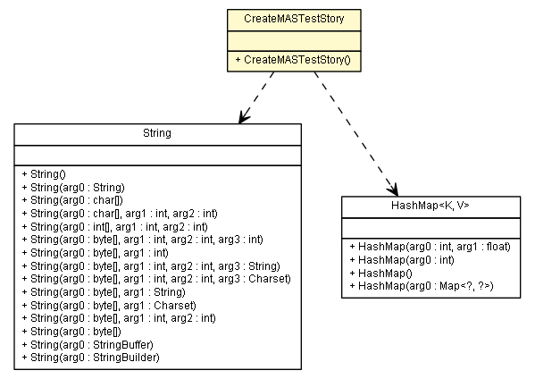

es.upm.dit.gsi.beast.reader.mas
Class CreateMASTestStory

java.lang.Object
 es.upm.dit.gsi.beast.reader.mas.CreateMASTestStory
es.upm.dit.gsi.beast.reader.mas.CreateMASTestStory
public class CreateMASTestStory
- extends Object
Project: beast
File: es.upm.dit.gsi.beast.reader.mas.CreateMASTestStory.java
Grupo de Sistemas Inteligentes
Departamento de Ingeniería de Sistemas Telemáticos
Universidad Politécnica de Madrid (UPM)
- Version:
- 0.1
- Author:
- Alberto Mardomingo, Jorge Solitario, alvarocarrera
| Methods inherited from class java.lang.Object |
clone, equals, finalize, getClass, hashCode, notify, notifyAll, toString, wait, wait, wait |
CreateMASTestStory
public CreateMASTestStory()
createMASTestStory
public static void createMASTestStory(String story_name,
String platform_name,
String package_path,
String dest_dir,
String loggingPropFile,
String storyUser,
String userFeature,
String userBenefit,
HashMap<String,String[]> scenarios)
throws BeastException
- Method to create the java file that it's executed from caseManager. Its
name comes from the Scenario that it's testing. Its behaviour is written
in the .story file allocated in the same folder, which is the plain text
given by the client.
- Parameters:
story_name - - the name of the Storyplatform_name - - the name of the platformpackage_path - - the package pathdest_dir - the main folder (typically src/main/java)loggingPropFile - storyUser - - The user launching the StoryuserFeature - - The feature requested by the useruserBenefit - - The benefit the feature will providescenarios - - A list with the tests to launch in the testSuite.
- Throws:
BeastException
Copyright © 2013 Grupo de Sistemas Inteligentes - Universidad Politécnica de Madrid. All Rights Reserved.